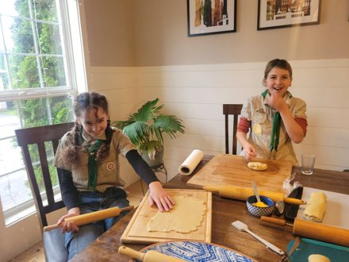
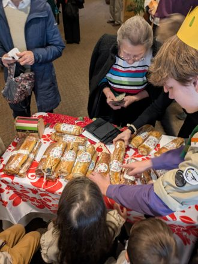
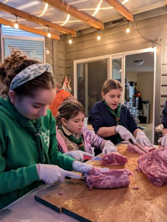
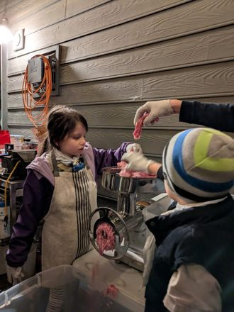

Adomány
Támogassa adományával a portlandi cserkészetet!
Zelle: portlandimagyarcserkeszet@gmail.com
Lehetősége van adománygyűjtő vásáraink által is támogatni munkánkat, táborainkat:
- Éves bejgli vásár a magyar közösség Karácsonyi ünnepségén – $25 / bejgli
- Éves füstölt kolbász vásár más magyar eseményeken az év közben – $20 / csomag
Lehet, hogy áraink magasabbak, mint ezen termékek piaci ára – de egyrészt sehol nem árulnak ilyen finomat, másrészt ez egyben adomány is, amivel a működésünket, táborainkat támogatja. Köszönjük!




